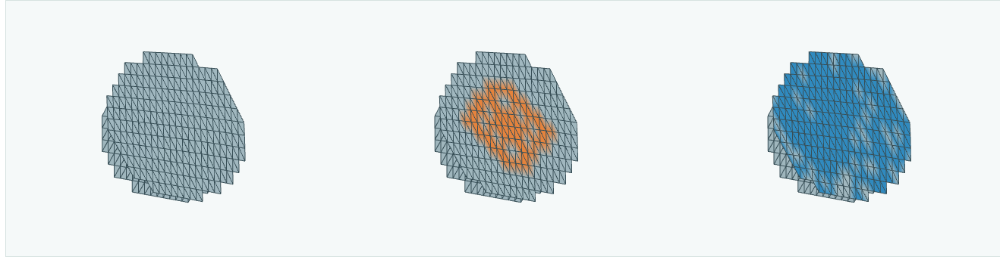
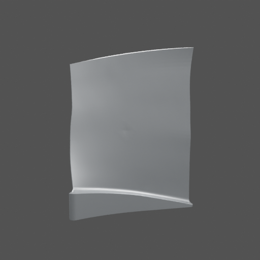
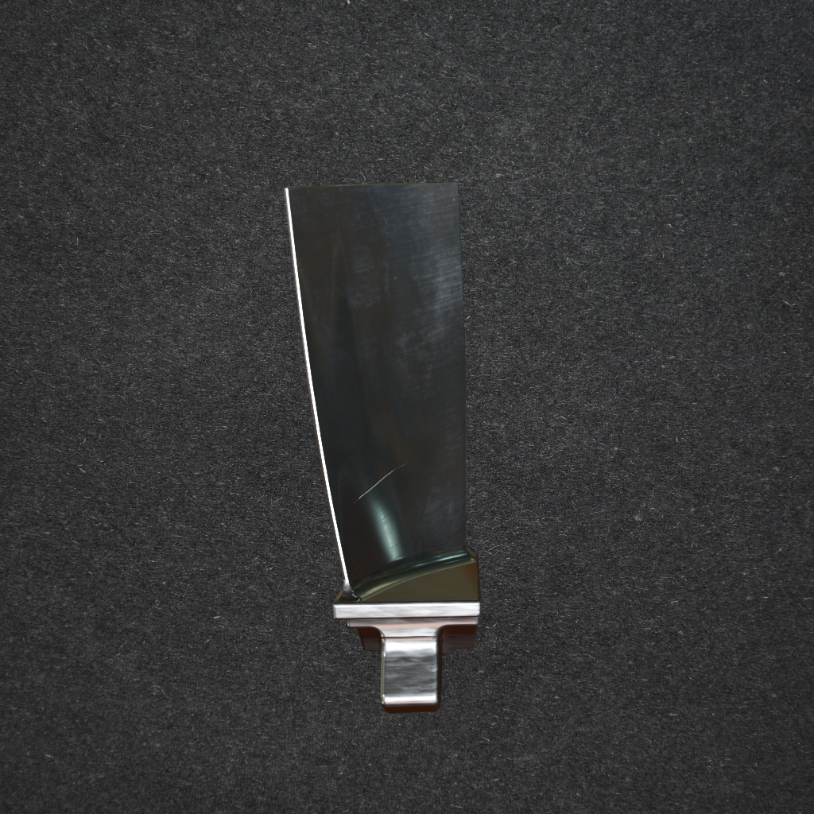
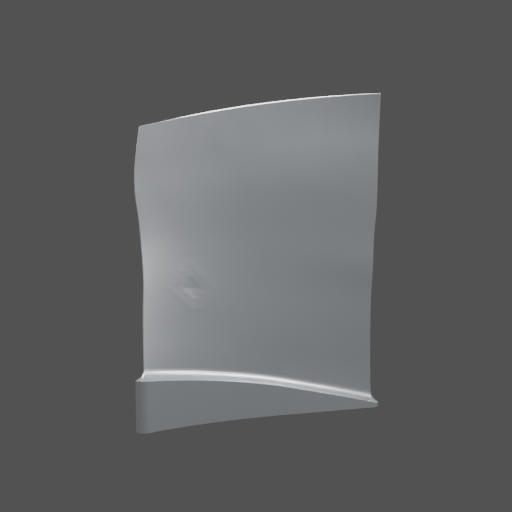
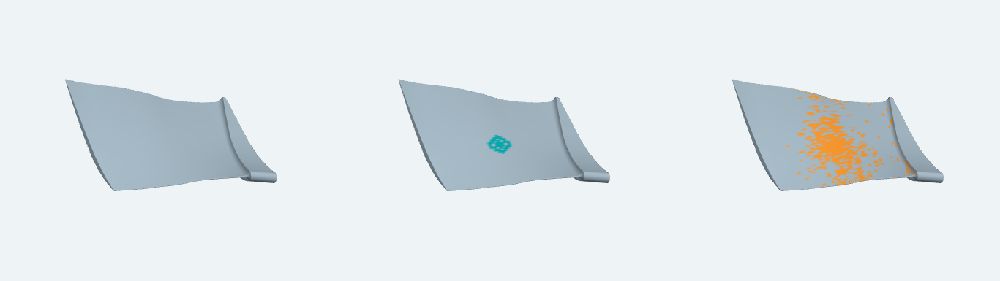

Actual output from the existing real-only model. This illustrates the intended output format; it is not a result of the proposed geometry-trained model.
96 sGuided video walkthrough actual inputs, outputs & next steps
3Real-photo 3D estimates visible surfaces, unverified depth
43Saved real-photo examples previously exposed development data
1Central question does 3D teaching help on real images?
WATCH THE PROTOTYPE WORK96 SECONDS · ENGLISH NARRATION + INTERACTIVE REPLAY
Our inputs. Our actual output. See the difference.
Watch the seven image pairs, rotate the saved 3D prediction, and see what we have completed and what remains planned.
AI-generated English narration + on-screen captions · actual saved results · planned work labelled separately
Watch it, then try it.
See the healthy blade and paired image inputs.
Compare known damage with the model’s prediction.
Explore completed work, latest findings and future plans.
The animated mesh is an earlier model’s saved synthetic prediction, with unchanged coordinates. The browser replays results; it does not run new inference. Local close-ups use the known answer for comparison. Transcript · Evidence and limitations · Data attribution
START HERE / THE PROJECT IN 3 MINUTESUPDATED 23 SEPTEMBER 2026
What we have. What we’re building.
Six visual slides: current 3D experiments and the broader inspection proposal.
01 / ONE INSPECTION PROBLEM, TWO RESEARCH QUESTIONSResearch in progress
Where is the damage — and how has the shape changed?
Current 3D prototype
Estimate the changed shape.

Healthy 3D model + matched images→Estimated 3D change
We can produce and check a predicted shape on controlled synthetic examples.
Broader proposal
Use 3D to teach better image inspection.
Known 3D damage↓Extra information while learning
Real photograph at inspection time→Suggested damage area
We still need to prove that this extra teaching improves results on real photographs.
The current output is a 3D shape estimate. The broader proposal targets damage highlights in a photograph.
Left: actual saved output from the earlier 3D model. Right: a workflow diagram of planned research. These are separate experiments.
02 / WHAT DATA DO WE HAVE?Available material
Pictures, known shapes, and examples we can control.

Controlled 3D examples
Public Rotor37 blade shapes
We add simulated dents and render 7 views per state. The exact shape change is known.
Training: 3 blade instances, 12 states. Latest check: 2 new instances, 18 dents + 2 healthy states.

Broader synthetic library
12,344 BladeSynth images
Healthy blades and damage appearances, including scratches and edge damage.
Useful image examples; not all have verified matching 3D data.
Real-image inventory
528 labelled AEBIS images
397 used for learning; 131 already used for development checks.
Also: 174 supplied photographs, with blade-outline labels and separate partial damage review.
Image counts are not counts of independent physical blades. The 3D study also uses 1 separate calibration instance with 2 states. No additional owner photographs are published in this update. Data scope & sources ↗
03 / HOW THE CURRENT 3D PROTOTYPE WORKSActual saved example
A healthy blade is our starting point.
INPUT · HEALTHY 3D MODEL + 7 IMAGE PAIRS
Healthy referenceInspection image
One matching pair shown. Camera setup and image-to-surface mapping are supplied.
→
LEARNED MODELEstimate how each surface point moves
Add that movement to the supplied healthy shape.
→
OUTPUTA changed 3D blade
Inspect where the model predicts movement.
Healthy starting shapeKnown simulated change Answer used for checkingModel prediction Estimated from images
Actual source-7 example, earlier XYZ model, local surface crop. Orange = known change; blue = predicted movement, not confidence. Known damaged shapes teach the training examples; this example’s damaged shape is used only to check the prediction. This is not unknown-blade reconstruction from an arbitrary photo.
04 / WHAT IS ALREADY DONE?Built & checked
We have working pieces and real experimental outputs.
1Simulated data
Build examples with known answers
Public 3D blades, artificial dents and matching rendered images.
2Learned models
Predict surface movement
Train small models and save their predicted 3D shapes for inspection.
3Fixed rules
Compare and stress-test
Constrain movement, test image shifts, and count false changes and missed damage.
Separate existing component
A real-photo model already highlights suspected damage.
Its saved predictions include useful detections and mistakes. They were not produced by the proposed 3D-assisted training.
The browser replays saved results; it does not run new inference. Synthetic dents are generated data, not learned detections. Fixed rules are reported separately from learned models.
05 / LATEST COMPLETED 3D CHECK · 22 SEPTEMBERProgress with limitations
Closer shapes do not yet mean reliable damage recovery.
We checked 18 simulated dents on 2 new blade instances, plus 2 healthy states.
Learned shape-change model3 / 18
Passed every improvement check
Whole-shape error improved in all 18 dents, but damage was also missed more often.
Simple fixed movement rule4 / 18
Passed every improvement check
The simple rule reduced false changes more than the new learned model.
What we learned: predicting movement in the right place is still the main challenge. Even a one-pixel mismatch can cause false changes.
Both compared with the earlier XYZ model under normal matched inputs. A full pass requires fewer false changes, with no worse shape errors, missed damage or flagged face problems. These are case counts, not overall accuracy; the 18 dents share 2 CAD instances. Exact results & definitions ↗
06 / WHAT IS PLANNED?Not yet demonstrated
Improve the 3D estimate. Test the wider idea fairly.
CURRENT 3D DIRECTION
Put the shape change in the right place.
Reduce false movement without missing more damage.
Check alignment and more varied synthetic examples.
Evaluate on untouched cases, then independently measured real shapes.
Target: trustworthy 3D change estimates
BROADER IMAGE-INSPECTION PROPOSAL
Does learning from 3D help on real photos?
Teach with images onlyvsTeach with images + 3D
Use the same model and label budget. Test both on new, human-checked real photographs.
Target: better damage highlights, fewer mistakes
WHERE WE STAND
A working research prototype and useful evidence. The full inspection goal remains to be demonstrated.
The two tracks need separate evidence. Current synthetic shape results do not prove improved real-photo inspection or physically accurate real damage depth.
1 / 6The two goals
Use Next / Previous or the ← → arrow keys. Full screen is best for presenting.
The detailed chapters below preserve the earlier proposal and demonstrations. The six slides above include the latest completed 3D study.
01 / THE STARTING POINTDATA & TARGET OUTPUT
Start with a blade. Make the evidence visible.
Damage can change appearance, shape, or both. We need examples of scratches, corrosion-like appearance and missing material, alongside controlled 3D dents.
Existing synthetic data
Surface appearance
Rendered scratch and corrosion examples provide known image masks. These broad synthetic examples are not all verified 3D training pairs.

Controlled geometry branch
Known shape change
Healthy CAD and deliberately modified shapes let us check a predicted dent against the actual simulated change.
Real photographs
Actual inspection images
Real photographs show the deployment setting. Human labels are needed to decide whether the predicted pixels are correct.
THE OUTPUT WE WANT
A real photograph in. A useful damage mask out. Evaluate how much real damage it finds, what it misses, and where it raises false alarms.
02 / THE RESEARCH IDEAPLANNED STUDY
Use 3D as a teacher.
During training, a rendered image can be linked to its surface. We want to test whether that extra information teaches a better representation of damage.
DURING TRAINING Extra information is available
01
Controlled synthetic data
Rendered images + damage masks
→
02
Train the RGB model
Image supervision + linked 3D supervision
3D surface → additional teaching signal
→
03
Adapt with real labels
The same photograph and label budget for every comparison
AT INSPECTION TIMEReal photograph→RGB model→Damage mask
The comparison that matters
Keep the model, images and real labels matched. Compare ordinary image training with training that adds useful 3D information. An improvement must survive repeated runs and independent evaluation.
What is still an open question
We have working components and saved predictions. We have not yet established that this proposed training approach improves real-image inspection. The 3D viewers below examine a supporting research branch.
03 / CONTROLLED 3D EXPERIMENTACTUAL SAVED OUTPUTS
A known dent. An imperfect prediction.
Compare the healthy surface, a dent we deliberately introduced, and what the learned model predicted from paired synthetic inputs.
Healthy CAD Known synthetic damage Saved prediction

Rotate the actual saved surfaces.
3 cases · 5 conditions · whole blade or close-up · drag to rotate
DENT A / DAMAGE REGION18.51% less error
The model gets closer to the known dent than simply keeping the CAD unchanged.
DENT A / WHOLE AIRFOIL3.63% more error
Unwanted changes elsewhere make the overall shape worse. There are 1,011 false changed vertices.
Measured on the saved Dent A case, normal paired inputs, relative to unchanged CAD. A local gain does not establish accurate whole-blade reconstruction. The viewer shows saved results; it does not train a new model.
Try a one-pixel shift.
In the viewer, change “Normal paired inputs” to “Reference shifted by 1 pixel”. This exposes how alignment can produce false surface changes. Then inspect the aligned condition and the healthy control.
04 / REAL PHOTOGRAPHSEXPLORATORY ESTIMATES
Bring the inspection back to real images.
Real-photo surface estimates let us explore shape and place saved image predictions on a visible surface. Their physical accuracy remains unverified.
Photograph on estimated surfaceSame estimate, neutral colourSaved suspect marks
Saved visible-surface estimates from a frozen pretrained model. Neighbouring points form the displayed surface; the hidden backside is not filled in. The neutral panel is the same estimate without photograph colours.
What the coloured marks mean
Amber shows saved detector predictions. Photo 0299 was reviewed as “No visible damage”, yet the model marked 1,563 pixels. A mark on the estimated surface is not a confirmed 3D defect.
The model marks 1,125 of 1,505 reviewed pixels and misses 380. The partial polygon includes missing material/background; it is not a surface-only damage label.
Detail crop · partial non-expert review · previously exposed development photograph. Unmarked pixels remain unknown. Region coverage is not whole-image accuracy or IoU.
05 / RESULTS & INTERPRETATIONWHAT THE EVIDENCE SUPPORTS
Progress, with the limits in view.
These are measured examples and working components. The central geometry-to-real training claim still needs a fair experiment.
Saved synthetic 3D comparison — normal paired inputs vs unchanged CAD
Development example
Damage-region error
Whole-airfoil error
False changed vertices
Interpretation
Dent A · source 5
18.51% lower
3.63% higher
1,011
Local gain; global degradation
Dent B · source 6
24.77% lower
7.29% higher
1,149
Same failure pattern
Healthy control
Not applicable
Zero displacement
0
Built into the residual-only input design
RMS error is measured on the raw saved coordinates. False changed vertices are truly unchanged vertices with predicted movement above 10⁻⁵ in normalized source units. These are development examples, not independent test results.
Built & replayable
Working components
Synthetic input generation, saved learned 3D fields, real-image predictions, partial review and interactive inspection.
Observed limitation
Reliability is unresolved
False surface changes, missed real-image regions and unverified real geometry prevent a claim of reliable 3D damage recovery.
Next experiment
Test the proposed advantage
Train matched comparisons with and without linked 3D supervision; evaluate the real-image masks using the same label budget and evaluation protocol.
NEXT MILESTONE
A fair answer to one question.
Does adding the correct 3D teaching signal improve real-photo damage masks beyond image-only training? Run the planned comparisons, report uncertainty and failure cases, and keep real 3D validation as a separate requirement.
Public research demonstration. Blade photographs are displayed with the project owner’s authorization. Third-party materials retain their source-specific licences; publication does not grant blanket reuse rights for every included asset.